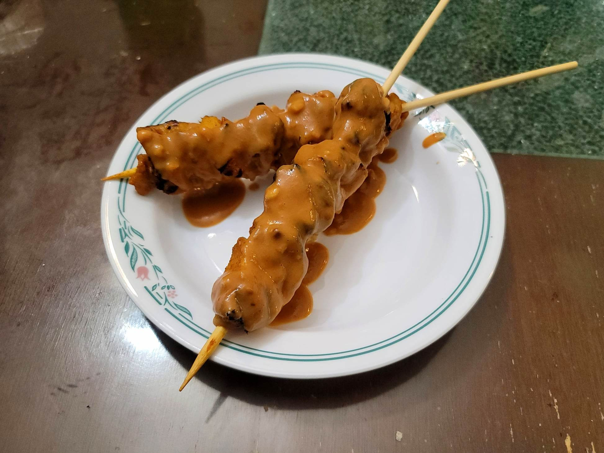

Chicken Satay

Ingredients:
Marinade:
- 1.2 lb Chicken thighs, cubed
- 1/4 cup (2 oz) Coconut milk, from a 14 oz can of Coconut milk
- 1 tbsp Curry powder
- 1 tsp White sugar
- 2 tsp Red curry paste
- 1 tsp Salt
Sauce:
- 12 oz Coconut milk (rest of the can)
- 2 tbsp Red curry paste
- 3/4 cup Creamy peanut butter
- 1/4 cup White sugar
- 2 tsp Dark soy sauce
- 1 tsp Salt
- 2 tbsp Cider vinegar
- 3/4 cup Water
- 2 tbsp peanuts, finely chopped
Instructions:
Sauce:
- Combine all sauce ingredients except for the chopped peanuts into a pot over medium low heat.
- Stir to combine then simmer, stirring every now and then, for 5 minutes.
- Add in the chopped peanuts and stir to combine.
Skewers:
- Combine marinade ingredients and marinate overnight.
- Thread cubed chicken onto skewers. Make sure the skewers will fit in pan.
- Heat 1.5 tbsp oil in a large pan over medium high heat.
- Cook skewers in batches for 3 minutes on each side until golden.
- To serve, drizzle the sauce over the skewers, or serve with a small bowl of sauce.